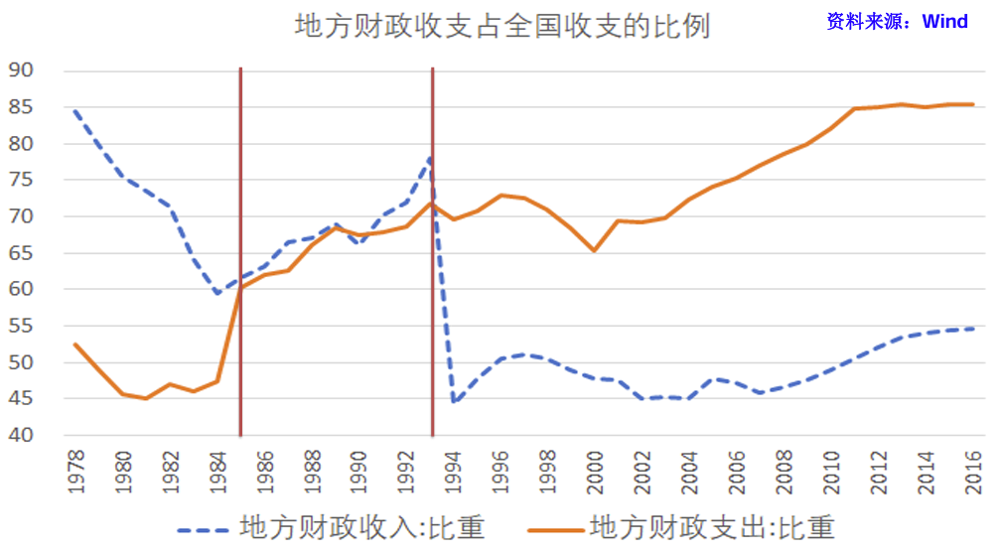
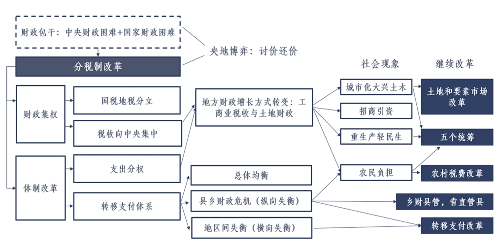
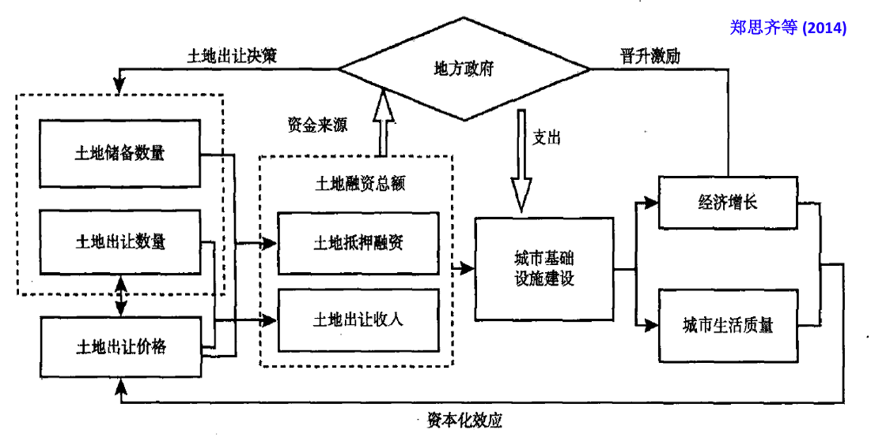
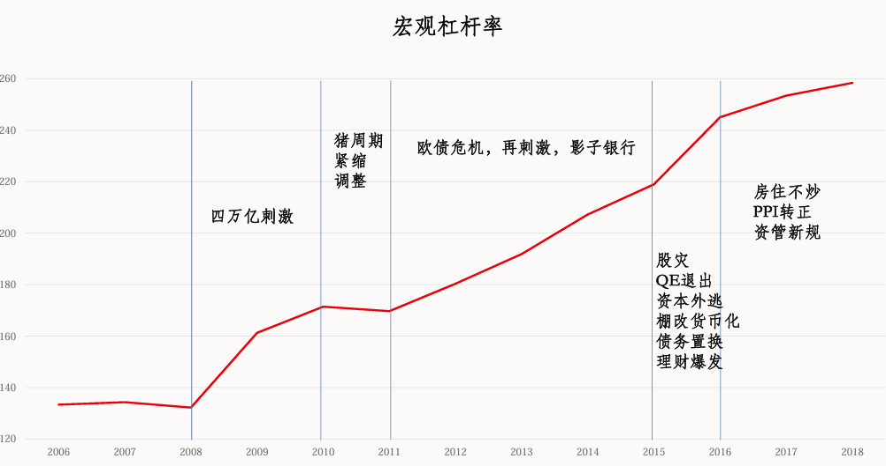
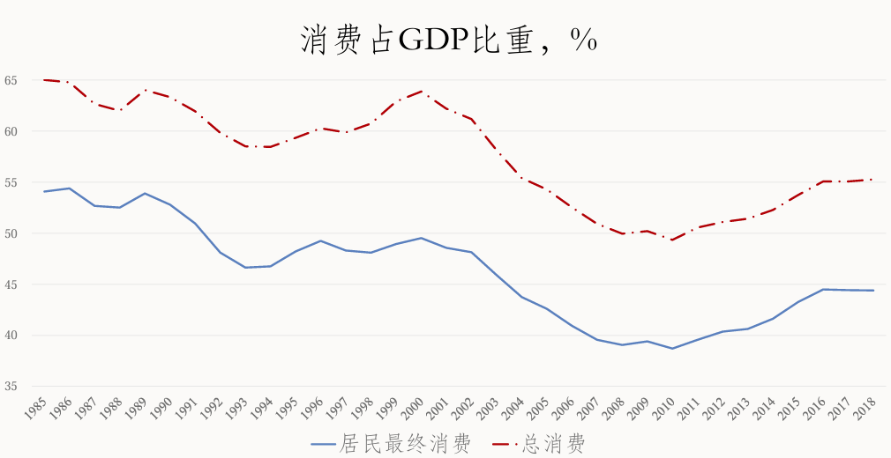
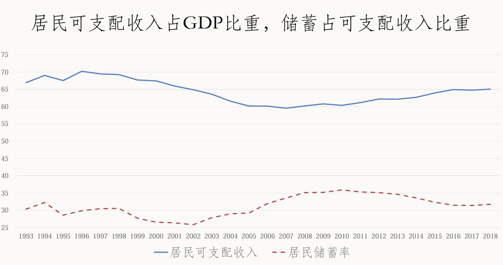
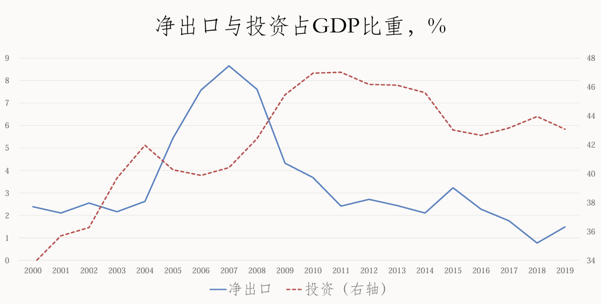
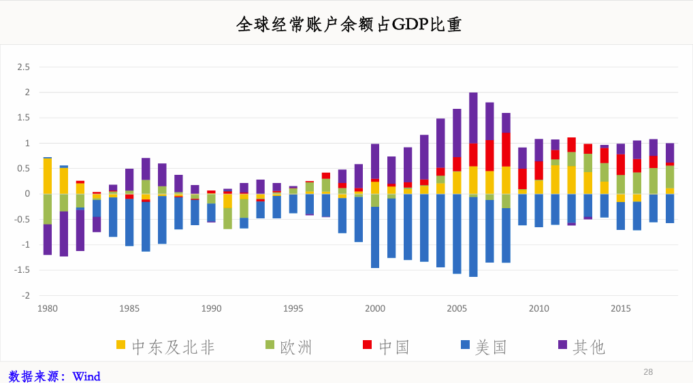

地方政府的权力与事务
政府治理的特点
中央政府五级政府管理体系：中央-省-市-县区-乡镇
政府治理体系特点:
- 中央与地方政府：宪法第三条规定的央地关系的主原则：中央和地方的国家机构职权的划分，遵循在中央的统一领导下，充分发挥地方的主动性、积极性的原则
- 党和政府：党负责重大决策和人事任免，政府负责执行，组织上紧密交织，人员上高度重叠，难以严格区分。严格区分对经济发展分析不太重要
- 条块分割，多重领导：中央的主要政治架构，即党委、政府、人大、政协等在省、市、县三级都完全复制，县教育局接受市教育局的指导，又接受县委、县政府的领导
- 上级领导与协调：制度设计的一大任务是减轻上级负担，提高决策效率，尽量在能达成共识的最低层级上解决问题
- 官僚体系：人事制度是组织机构的核心，官僚体系自古是政治和社会支柱之一。官员必须学习和贯彻统一的意识形态，由上级任命，地方主官需要在多地轮换任职
事权划分的一般性原则
- 外部性原则
- 信息复杂性原则
- 激励相容原则
外部性与规模经济
地方政府权力的范围和边界由行政区划决定，可以先从行政区划角度来分析权力划分。
一件事该不该由地方政府自主决定可以从外部性的角度来考虑，若只影响本地，则由本地全权处理，如果还影响其他地方上级就该出面协调。
按照经典经济学的看法，政府的核心职能是提供公共物品和公共服务。一方面，因为规模经济，覆盖的人越多越划算，政区越大越好；另一方面，受制于人们获取这些服务的代价和意愿，政区不能无限扩大。以公共物品的规模和边界为切入点，可以帮助理解中央和地方政府在分工上的一些差异，比如国防覆盖全体国民，不能遗漏任何一个省，因此由中央负担。中小学教育主要覆盖当地人，日常支出主要由当地政府负担，但是教材的编制由中央主导。
除此以外各地行政区划还有三个重要的影响公共服务效果的其他因素
- 人口密度：人口稠密的地方行政区域面积可以小一点，人口稀疏的地方行政区域就该大些
- 地理条件：山川河流是行政管理的自然边界
- 语言文化差异：语言不通导致政务管理或公共服务需要差异化，成本因此增加，规模效益降低。语言差异与地理差异高度相关
我国经济中的一个现象：处在行政交界（尤其是省交界处）的地区经济发展普遍比较落后。边界地区首先面临基础设施如道路网络的不足，早期断头路问题比较常见，随着经济发展和基础设施的突飞猛进，省界处的交通不再是大问题。另一个长期困扰的问题是环境污染，是典型的跨区域外部性问题，通过跨区域的共同上级来协调解决。行政边界影响经济发展，目前的行政区划不能完全适应工业和服务业的发展需要，区域性整合是必要一步。区域性整合的思路有两种，一种是加强县的独立性和自主性，包括扩权强县、撤县设市、省直管县，另一种是扩张城市，撤县设区。
复杂信息
行之有效的管理必然要求掌握关键信息，信息复杂多变，持续性的收集和分析信息需要投入大量资源，代价不小。有信息优势的一方，或者说能够以更低代价获取信息的一方，自然就有决策优势。上级名义上拥有最终决定权，拥有形式权威，但由于信息复杂且不易处理，下级实际上的自主性很大，拥有实际权威。实际权威来自于信息优势，这一逻辑也适用于单位内部。单位领导虽有形式权威和最终决策权，但具体工作大都要求专业知识和经验，所以专职办事的人员实际权力很大。
获取和传递信息需要花费大量时间精力，上级要不断向下传达，下级要不断向上汇报，平级要不断沟通，作为信息载体的文件和会议也就成了权力的载体之一，一套复杂的文件和会议制度就成了权力运作不可或缺的部分。为了减少信息传递的失真和偏误，降低传递成本，文件类型有严格的区分，格式有严格的规范，报送有严格的流程。每种公文的发报机关、主送机关、紧急程度以及密级都有严格的规定。因为关键信息可能产生重大影响，也可能被利益相关方有意扭曲和隐瞒，比如地方的GDP数字。因为下级可能扭曲和隐瞒信息，所以上级的监督和审计就非常必要，既要巡视督察工作，也要监督审查官员。但是监察机制本身也受到信息的制约。因为信息复杂多变，模糊不清的地方太多，而政府的繁杂事权又没有清楚的法律界定，所以体制内的实际权力和责任都高度个人化。因为信息复杂，不可信的信息比比皆是，而权利和责任又高度个人化，所以体制内的规章制度无法完全取代个人信任。上级在提拔下级时，除考虑工作能力外，关键岗位上都要尽量安排信得过的人。
激励相容
如果一方想做的事，另一方既有意愿也有能力做好，就叫激励相容。上级想做的事大概分为两种，一类比较具体，规则和流程相对明确，成果容易衡量和评价。另一类比较抽象和宽泛，上级只有大致目标，需要下级发挥主动性和创造性调动资源去完成。
在专业性强，标准化程度高的部门，具体而明确的事务更多，更倾向于垂直化领导和管理。有些部门虽然工作性质比较专业，但与地方经济密不可分，很多工作需要本地配合，如果实行完全的垂直管理可能会有问题，例如工商局在1999年改革中归省级工商部门统管，2011年恢复省级以下工商部门的地方政府分级管理制度，以地方管理为主，2018年机构改革后并入市场监督管理局，由地方政府分级管理。
激励相容原则要求给地方放权，不仅要让地方负责，也要与地方分享发展成果。激励相容原则首先要求明确地方的权利与责任。一个地区谁主管谁负责，以行政区划为权责边界，兼顾了公共服务边界问题和信息优势问题，同时也给了地方政府很大的权力，有利于调动其积极性。其次是权力和资源的配置要制度化，不能朝令夕改，制度要可信并形成明确的预期。
招商引资
地方政府不仅可以为经济发展创造环境，它本身就是经济发展的深度参与者，这一点在招商引资上体现的淋漓尽致。地方政府是城市土地的所有者，为了招商引资发展经济，会把工业用地以非常优惠的价格转让给企业使用，并对土地进行一系列的初期开发（例如通电、通路、通暖、通气、给水、排水、通信）。对于规模较大的企业，地方通常会给予很多金融支持，例如投资平台入股，本地国企参与投资，协助企业获得银行贷款。地方政府还可以为企业提供补贴和税收优惠。
财税与政府行为
财政是国家治理的基础和重要支柱，科学的财税体系是优化资源配置、维护市场统一、促进社会公平、实现国家长治久安的制度保障。
分税制改革

20世纪80年代的中国经济特征的特点是承包，农村搞土地承包，城市搞企业承包，政府搞财政承包。财政承包制下，交完了中央的，剩下的都是自己的，因此地方有动力扩大税收来源，大力发展经济。各类承包制有利于调动全社会的积极性，推动社会整体走出僵化的计划经济，让人们切实感受到收入增长，但是造成了中央财政预算收入占全国财政预算总收入的比重越来越低，全国财政预算总收入占 GDP 的比重也越来越低，导致严重削弱了国家财政能力，不利于推进改革。
1994年的分税制改革把税收分为了三类：中央税（如关税）、地方税（如营业税）、共享税（如增值税）。同时分设国税、地税两套机构，2018年国税和地税合并。分税制是20世纪90年代推行的根本性改革之一，也是最为成功的改革之一，扭转了“两个比重”不断下滑的趋势，中央占全国财政预算收入比重从22%一跃变成55%，国家预算收入占GDP的比重从11%增加到20%以上，加强了中央政府的宏观调控能力，也从根本上改变了地方政府发展经济的模式。
土地财政
分税制没有改变地方政府以经济建设为中心的任务，却减少了其手头可支配的财政资源。虽然中央转移支付和税收返还可以填补预算内收支缺口，但是经济发展所需的诸多额外支出，比如招商引资和土地开发等，就需要另筹资金了。一方面，地方可以努力增加税收规模，另一方面，地方可以增加预算外收入，其中最重要的就是围绕土地出让和开发所产生的土地财政。
分税制改革后，企业的大多数税收变成了在所在地上缴，刺激地方政府招商引资。地方政府尤其青睐重资产的制造业，原因如下
- 投资规模大，对GDP的拉动作用明显
- 增值税在生产环节征收，与生产规模直接挂钩
- 制造业不仅可以吸纳从农业部门转移出来的低技能劳动力，也可以带动第三产业发展，增加相关税收
因为大多数税收来自企业，且多在生产环节征收，所以地方政府重视企业而相对轻视民生，重视生产而相对轻视消费。这种倚重生产的税制，刺激了各地竞相投资制造业，推动了制造业迅猛发展，加之高效的劳动力资源和全球产业链重组等因素，使我国成为了世界制造业第一大国。但是也付出了相应的代价，比如政府为了争夺大工业项目，放松环保监督，损害了生态环境，推高了过剩产能。
2003年中央提出科学发展观之后，要求更加重视民生支出，民生支出基本都由地方政府承担，所以地方支出占比从2003年开始快速增长，从70%一直增长到85%。分税制改革后，地方政府用来发展经济的资源受到了几方面的挤压，预算内财政支出从支持生产建设转向了支持公共服务和民生，企业不再向地方政府缴纳很多费用(行政收费、集资、摊派、赞助等)，乡镇企业改制利润不再上缴，2001年税改后中央政府拿走60%的所得税收入。地方不得不另谋出路，寻找资金来源，土地财政就此登场。
我国实行土地公有制，城市土地归国家所有，农村土地归集体所有，农地要转为建设用地，必须先经过征地变成国有土地，之后才可以用于发展工商业或建造住宅，所以国有土地的价值远高于农地。1994年分税制改革时，国有土地的决定权和收益都留给了地方，当时这部分收益很少。一来乡镇企业虽然发达， 但使用的都是农村集体建设用地，二来虽然城市用地使用权可以有偿转让，但各地为了招商引资，土地转让价格都非常优惠。
1998年发生了两件事导致了城市土地价值开始显现。第一件事是单位停止福利分房，实行房地产分配货币化，第二件事是修订后的《中华人民共和国土地管理法》开始实施，基本上锁死了农村集体土地的非农建设通道，规定农地必须经过征地后才能变成国有土地，确立了城市政府对土地建设的垄断权力。
1999年和2000年因为尚未实施土地招拍挂（招标、拍卖、挂牌）制度，国有土地转让收入并不高，土地转让过程不透明，中间存在大量腐败。2001年推行招拍挂制度，2002年明确国土部明确四类经营用地（商业、旅游、娱乐、房地产）采用招拍挂制度，各地政府开始大量征收农民土地然后有偿转让，土地财政开始膨胀。2003年土地出让金就已经达到了地方公共预算收入的55%，2008年金融危机之后，在财政和信贷政策的共同刺激下，土地转让收入在上一个台阶，于2010年达到地方公共预算收入的68%。
土地财政不仅包含高额的土地使用权转让收入，还包括土地使用和开发的各种税收收入，一方面是直接相关的土地增值税、城镇土地使用税、耕地占用税、契税，另一方面则是和房地产开发和建筑企业有关，主要是增值税和企业所得税。如果把这些税收加起来算作土地财政的总收入，2018年总收入相当于地方公共预算的收入的89%，是名副其实的第二财政。地方政府也要负担土地转让的相关支出，包括征地拆迁补偿和七通一平等基础性土地开发支出，这部分支出总体与收入相当，有时甚至高于收入。地方政府本来也不是靠地赚钱，要的主要还是土地开发后吸引来的工商业经济活动。2001年所得税改革以后，中央财政就拿走了企业所得税的60%，从那以后地方政府发展经济的方式从工业化变成了工业化与城市化两手抓，一方面低价供应大量工业用地，进行招商引资，另一方面限制商住用地供给，从不断攀升的地价中赚取土地垄断收益。虽然商住用地只占出让土地的一半，但几乎贡献了所有的土地使用权转让收入。
以行政区划为单位，以税收和土地为手段展开招商引资竞争，且在上下级政府间层层承包责任和分享收益，这一制度架构对分税制改革后的经济的飞速发展有着很强的解释力。但是随着时代发展，这种模式的弊端和负面效果也越来越明显，需要改革。首先是地方政府的债务问题，地方政府任期有限，难免会催生短视行为，过度借债去搞大项目，投资质量下降，收益不高，债务负担越来越重。另外是土地资源的利用效率不高，地区间虽然搞竞争，但是用地指标不能跨省流动到效率更高的地区，不能让资源转移到效率更高的地方，无法长久地提高整体效率。随着工业化发展，市场竞争越发激烈，技术要求越来越高，先进企业不仅需要用地，还需要产业聚集、研发投入、技术升级、物流和金融配套等，很多地方不具备这些条件，徒有大量用地指标也没有用。改革不仅要在省市县内部打破城乡建设用地之间的市场壁垒，建设统一的市场，而且要探索建立全国性的建设用地、补充耕地指标跨区域交易机制，提高全国范围内的土地资源配置效率。
纵向不平衡与横向不平衡
分税制改革后，地方收支差距由中央转移支付填补。但不见得所有地区都能补上。横向和纵向的不平衡带来了矛盾，也催生了改革。
中央与省分成，省与市县分层，可因为上级权威高于下级，越往基层分到的钱越少，分到的任务却越来越多，出现财权层层上收，事权层层下压的局面。全国范围上来看，地方财政预算收入普遍仅够给财政供养人员发工资，基层政府一旦没钱，就会想办法增收，以保持正常运转。三农问题成为21世纪初政策和改革的焦点之一。农村税费改革降低了农民负担，但是也让基层财政更加艰难，之后的改革加大了上级的统筹和转移支付力度。其一将把农村基本公共服务开支纳入国家公共财政保障范围，由中央和地方政府共同负担。其二将转移支付制度中引入激励机制，鼓励基层政府达成特定目标并给予奖励，例如对精简机构和人员的县乡政府进行奖励。其三是把基层财政资源向上一级政府统筹，推行乡财县管，扩权强县，财政省直管县等改革。
我国地区经济发展的差距在20世纪90年代中后期开始扩大，由于出口飞速增长，制造业自然向沿海省份聚集，以降低出口货运成本。公共财政的一个主要功能就是再分配财政资源，平衡地区间的人均公共服务水平，所以中央向中西部地区开始大规模的转移支付。由于中央的转移支付，省份之间的人均财政支出基本持平。转移支付大概可以分为一般性转移支付（均衡性转移支付）和专项转移支付。前者附加条件少，地方可以自行决定用途，后者要求专款专用，避免越穷的地方拿的转移支付越多从而缺乏增长动力。虽然在人均公共服务的均等化上取得了长足进展，但是公共服务之间的差别依然很大。

政府投融资与债务
土地本身不值钱，值钱的是土地上的经济活动。土地资本化的魔力在于可以挣脱物理属性，在抽象的意义上交易承诺和希望，将过去的储蓄、现在的收入、未来的前途汇聚于土地上，使其价格暴增。一笔一笔的转让交易并不能完全体现土地的金融属性，地方政府还可以把土地相关的未来收入资本化，去获取贷款和各类资金，将土地财政的规模成倍放大为土地金融。
城投公司和土地金融
实业投资比金融投资复杂得多，除了考虑时间、利率、风险等基本要素之外，还要处理现实中的种种复杂情况。我国政府不但拥有城市土地，也掌握着金融系统，会以各种方式参与实业投资，不可能置身事外。
法律规定，地方政府不能从银行贷款，2015年前也不允许发行债券，所以政府想要借钱投资，需要成立专门的城投公司，这类公司一般都是国有独资，统称为“地方政府融资平台”。这类平台有以下特征
- 持有从政府取得的大量土地使用权，这些资产价格不菲，再加上公司的运营收入和政府补贴，可以撬动银行贷款和其他资金，实现快速扩张
- 盈利状况依赖政府补贴，补贴种类五花八门，除了税收返还，还有纳入公共预算的专项补贴。融资平台公司投资的大多数项目都有基础设施属性，项目本身盈利能力不强，依赖补贴不能说明没有效率
- 政府的隐形担保可以让企业大量借款，政府不断为融资平台注入资产，市场自然认为这些公司不会破产，政府不会见死不救，风险很低。
当地融资平台一般只参与前期的拆迁和土地整理，这部分投入大、利润低且涉及复杂的拆迁问题，之后的建设和运营大都由房地产公司来做。
开发工业园区更像基础设施项目，投资金额大，盈利低，大都由融资平台类国企主导开发，之后再交给政府去招商引资。招商引资能够成功取决于地区经济发展水平和营商环境，中西部市县招商困难很多，因此有些地方干脆就划一片地出来，完全依托民营企业来开发产业园区，甚至连招商引资也一并委托。按照法律，政府不能与企业直接分享税收，但可以购买企业服务，以产业发展服务费的名义来支付税收里约定的分成，这也就是这些企业的收入来源之一，这种模式叫做政府和社会资本合作（PPP）。PPP在中国有两大特征，第一个是项目多，规模大，但真正开工建设的只有四成，第二个是社会资本大都不是民营企业，而是融资平台和其他国企。

地方政府债务
土地金融带来快速工业化和城市化的同时，也积累了大量债务。这套模式的关键是土地价格，一旦经济增速放缓，土地出让收入减少，积累的债务就会成为沉重的负担，可能压垮融资平台甚至地方政府。
地方债的爆发始于2008-2009年，为应对美国蔓延至全球的金融危机，我国出台4万亿计划，地方政府需要投资2.82万亿元，为配合政策落地、帮助地方政府融资，中央放松了对地方融资平台和银行信贷的限制。快速猛烈的经济刺激对提振恶化的经济很有必要，但大水漫灌的结果也导致了泥沙俱下，经济不佳的地方也大量借钱，地方政府积累了大量的债务。
在城市建设开发过程中引入银行资金，需要解决三个技术问题，第一政府不能直接借款，需要一个能借款的公司；第二城市开发项目繁复，有的赚钱有的赔钱，不能以单个项目分头借款，需要捆绑在一起，第三仅靠财政预算收入不够还债，要能把跟土地有关的收益用起来。1998年国家开发银行和安徽芜湖市合作，将8个城市建设项目捆绑在一起，放入专门的城投公司芜湖城建，以该公司向国开行借款10.8亿元。2003年，国开行和天津的合作里允许用土地增值收益作为贷款还款来源，这些做法也成为了城投公司的标准做法。
2008年以前，国开行是城投公司的最主要贷款来源，2008年4万亿刺激以后，四大行和城商行开始大规模贷款给城投公司。城商银行为融资平台贷款有两大风险
- 基础设施建设项目周期长，需要中长期贷款
- 城商行的存款来源不稳定，经常需要在资本市场上融资，容易出现风险。
城投公司最主要的融资方式是银行贷款，其次是发行债券，即通常所说的城投债。与贷款相比，发行债券有两个好处，其一把债券卖给广大投资者可以分散风险，而贷款风险集中在银行系统。其二债券可以交易，价格和利率时时变动，反映了市场对风险的看法，灵活的价格机制可以把不同风险的债券分配给不同类型的投资者，提高了配置效率。城投债总体水平虽然不低，但也不算特别高，地方债务总额在2015年到2017年间约为四五十万亿，占GDP的五六成，其中三四成是融资平台的负债（隐形债）。但是在个体上看，层级越低的政府负担越重，越穷的省债务负担越重。
对地方债务的治理开始于2010年，重大的改革大概有四项
- 债务置换：用地方政府发行的公债去替换一部分融资平台公司的银行贷款和城投债，这么做有三大好处
- 利率从7%-8%降低到了4%，大大减少了利息支出。也有利于改善资本市场配置资金的效率，市场认为城投债风险低利率高，导致银行乐于做大这个业务，不愿意冒险借给其他企业，推高社会利率和融资成本
- 政府公债的期限要长的多，降低了期限错配和流动性风险
- 政府信用比融资平台信用高，债务置换提升了信用级别
- 推动融资平台转型，剥离和政府的关系，破除政府对其形成的“隐形”担保
- 约束银行和金融机构，避免大量资金流入融资平台
- 问责官员，对过度负债的行为终身追责，从根本上约束官员的投资冲动
招商引资中的地方官员
人才的选拔和激励机制是官僚机制的核心，决定着政府运作的效果。经济发展是地方官的主要政绩，对其声望和升迁有着重要的影响。
地方主官任期有限，想在任内快速提升经济，往往只能加大投资力度，上马各种大工程、大项目，政治-投资周期比较频繁。投资需要资金，需要土地财政和土地金融的支持，所以在官员上任的前几年，土地出让数量一般都会增加。而新增的土地供应大多位于城市周边郊区，导致城市发展呈现出了摊大饼的态势，建设面积大但是不够紧凑，通勤时间长成本高，加重了拥挤程度，也不利于环保。这种偏好投资的增长模式会造成很多的不良后果，例如经济整体效率降低，助推投资过剩，偏好看得见的工程建设，忽视看不见的工程（例如地下管网）。2013年中组部发布的通知强调不能搞地区生产总值及增长率排名。之后地方GDP增长率和固定资产投资增长率开始下降。
官员考核和晋升中，政绩非常重要，但不代表人情不重要。只要工作业绩不能百分百清楚地衡量，上级的主观评价就是重要的，与上级的人情关系就是重要的。但如果某些领导为扩大自己的权力和影响力，忽视工作业绩，任人唯亲，就可能打击下属的积极性。为了约束这种任意，一些地区会搞论资排辈，但如此一来工作效率和积极性都会降低。但是这种现象对整体的经济是否有解释力比较怀疑，一方面地区之间的竞争关系会限制地区官员肆意妄为，另一方面，人情关系网依赖的关键人物不确定性很大，有一人得道鸡犬升天就有树倒猢狲散。
政府投资和土地金融的发展模式，一大弊病就是腐败严重。与土地有关的交易和投资往往金额巨大，且权力高度集中在个别官员手中，极易滋生腐败。我国的腐败有两个特点
- 腐败和经济高速增长并存
- 随着改革深入，政府市场关系不断变化，腐败形式也在不断变化
腐败大概可以分为两类
- 掠夺式腐败，例如对私营企业敲诈勒索，向老百姓索贿，盗用挪用公款等，随着各项制度和法制建设以及监督技术的进步，这类腐败已经大大减少
- 官商勾连共同发财式腐败，如官员利用职权将项目批给关系户，企业完成项目为官员贡献政绩，也要在私下给官员很多好处。这类腐败常发生在招商引资过程中，短期内可以和经济增长并存，但是长期存在四大恶果
- 长期偏重投资导致经济结构扭曲，资本收入占比高而劳动收入占比低，老百姓收入和消费增长速度偏慢
- 扭曲投资和信贷资源配置，将资金浪费在效率不高的关系户项目上，推升债务负担和风险
- 权钱交易扩大了贫富差距
- 地方上形成利益集团，限制市场竞争同时也破坏政治生态
在反腐高压下，部分地方官员变得瞻前顾后、缩手缩脚。2016年开始，中央开始强调庸政怠政懒政也是种腐败，要破除为官不为。
工业化中的政府角色
我国经济改革的起点是计划经济，地方政府掌握大量的资源（土地、金融、国企等），不可避免会介入到实业投资当中。且由于实业投资的连续性、复杂性和不可逆性，政府的介入必然也是深度的，与企业关系复杂而密切，不容易退出。大企业不仅是技术的汇聚点和创新平台，也是行业标准制定者和产业链核心，与政府关系身历来深厚复杂。
京东方与政府投资
在显示面板企业的发展过程中，地方政府的投资发挥了关键作用。其股东既有综合类国资集团，也有聚焦具体行业的国有控股集团，还有地方城投公司。投资方式既有直接股权投资，也有通过产业投资基金进行的投资。
现代工业的规模效应很强。显示面板行业投资动辄百亿，只有大量生产才能拉低平均成本，因此新企业的进入门槛极高，还要面对先进入者积累的巨大成本和技术优势。若新企业成功实现大规模量产，不仅自身成本会降低，还会抢占旧企业的市场份额，削弱其规模经济，推高其生产成本，因此一定会遭到旧企业的各种打压。
由国界和政治因素造成的市场扭曲很多，传统经济学中市场竞争、优胜劣汰以及比较优势等推理的有效性都会受到挑战。行政手段造成的扭曲只有行政力量才能破解，但这并不意味着政府就一定要帮助国内企业进入某行业，也要看国内市场规模。液晶屏幕在国内的市场就很大，扶持本国企业进入，可以打破国际市场的扭曲和垄断，也能减少下游产业成本，促进发展。
京东方和华星光电的崛起，带动了整个光电产业链向我国集聚。这也是规模效应的体现，因为规模不够就吸引不到上下游企业向周围聚集。一旦行业集聚形成，企业自身的规模经济效应就会和行业整体的规模经济效应叠加，进一步降低运输和其他成本。显示面板生产企业的发展，拉动了众多国内企业进入其供应链，其中用到的很多技术和材料也可以用于其他半导体等产业，从而带动相关行业的发展。规模经济和产业集聚也会刺激技术创新，市场大，利润大就能支撑更大规模的研发投入。
“东亚经济奇迹”的一个重要特点是政府帮助本土企业进入复杂度很高的行业，充分利用其中的学习效应、规模效应和技术外溢效应，迅速提升本土制造业的技术能力和国际竞争力。韩国的“汉江奇迹”就是一个例子。
新兴制造业在地理上的集聚效应很强，大多数新兴制造业对自然条件要求不高，不会特别依赖先天自然资源，而且我国基础设施发达，物流成本低，内陆城市和沿海城市差别不大，这些城市若能吸引龙头企业落户，就可能带来一大片相关企业，在新兴产业的发展中占有一席之地。
这种发展效应会引起其他地区的模仿，引发了对产能过剩的担忧。招商引资竞争所引发的重复建设屡见不鲜，尤其在那些技术门槛低、投资额度较小的行业，比如光伏行业。
光伏发展与政府补贴
20世纪70年代，阿拉伯世界禁运石油，导致油价飙涨，石油危机爆发，刺激了美国政府扶持和发展新能源产业，80年代初美国光伏市场占全球市场的85%以上。里根上台后油价回落，废止了对光伏的支持和优惠政策，产业链向德国和日本转移。
2008年，中国各地加大了对于基础设施和工业项目的投资，其中包括了光伏，主要手段还是通过廉价土地、税收优惠、贴息贷款等。这一时期的光伏产品主要出口欧美市场，由于光伏的发电成本高，国内消费不起，国内市场只占我国光伏企业销量的6%。由于光伏成本高，海外需求也离不开政府补贴，例如德国对装机有贷款贴息优惠以及标杆电价补贴。2008年到2011年，美国金融危机和欧债危机相继爆发，欧洲各国大幅削减光伏补贴，同时为了应对中国企业的冲击，美国和欧盟陆续展开反倾销反补贴调查，大量企业开始破产倒闭。
2011年中央政府分阶段实行标杆电价补贴，并与世界各国一样随着时间逐步下调，实际上企业的效率提升和成本降幅远快于补贴降幅，投资光伏电站有利可图，装机规模快速上升。装机量快速上升导致补贴资金严重不足，拖欠补贴现象严重，2019年起，我国逐步退出固定电价的补贴，实行市场经竞价。由于多年的技术积累和规模经济，光伏成本已经逼近燃煤电价，迈入平价上网阶段。
新能源的技术升级和成本下降只有在大规模的生产和市场应用当中才能逐步发生，没有全产业链的工业化量产和创新技术就不可能实现规模经济和成本下降。新能源技术在没有竞争优势时进入市场只有两个办法，一是对传统能源征收碳税或化石燃料税，二是直接补贴新能源行业。但是第一种方法不够经济，在早期化石能源市场大成本低，征收重税会导致市场的巨大扭曲，更加合理的方式是早期直接补贴新能源，加速技术进步和成本降低，等到市场份额和成本接近传统能源后，再降低补贴并对传统能源征税，加速其退出。无论在哪里，光伏的需求都是由政府补贴创造出来的。即使遭遇海外需求端的打击导致大量企业倒闭，但是积累的人才、技术、行业知识和经验不会随着企业破产而倒闭，一旦需求回暖这些资源就又可以重新整合。
在光伏产业的发展中，能看到“东亚产业政策模式”的另一个特点：强调出口。当国内市场有限的时候，海外市场可以促进竞争，迫使企业创新。补贴和税收优惠会产生一些低效率的企业，但这些企业在面临挑剔的海外用户时是无法过关的。出口量大的企业往往是效率高的企业，它们市场份额的扩大会吸纳更多的行业资源，压缩低效率同行的生存空间，淘汰落后产能。
地方政府招商引资的优惠政策，会降低产业的进入门槛，带来重复投资和产能过剩。供需动态匹配和调整过程中的周期性产能过剩是市场经济的常态，但是我国还有三个重要因素加剧了重复投资：
- 我国需求巨大，在国内产能还没发展起来时，人人都有机会，投资一拥而上
- 地方政府招商引资的优惠条件都发生在工厂建设阶段，且地方政府领导更换频繁，若时间拖久了优惠政策可能就没有了
- 地方政府追随中央产业政策，哪怕本地条件不够也要投资到中央指定的方向上
重复投资不总是坏事，存在两个好处，一是提供了就业，也为当地农民转变成工人提供了学习场所和途径，二是加剧竞争，带来成本创新和功能简化，行业在残酷竞争中快速洗牌，将资源和技术迅速向头部企业集中，质量迅速提高。不管有没有政府扶持，要害都不是重复建设，而是保持竞争。地方政府若是过度保护本地企业，做不到劣汰，竞争效果就会大打折扣，导致资源的错配和浪费。产业政策要有退出机制，补贴政策本身要设计退出机制，低效企业的破产退出渠道也要顺畅。然而破产难是我国经济的顽疾，一方面债权银行不愿意走破产程序，害怕暴露不良贷款，无法掩盖风险，另一方面地方政府害怕职工安置和民间借贷等一系列矛盾公开化。总体来看我国在企业退出方面的制度改革和建设还有很长的路要走。
政府产业引导基金
政府产业引导基金既是一种招商引资的新方式和新的产业政策工具，也是一种以市场化方式使用财政资金的探索。
私募基金就是一群人把钱交给另一群人去管理和投资，分享投资收益。出钱的人叫有限合伙人（LP），管钱和投资的人叫普通合伙人（GP）。私募是有限合伙制，要经历募资、投资、管理、退出等四个阶段（募投管退），到期按照合伙协议分钱和散伙。国内最大的一类LP就是政府产业引导基金，其中既有中央政府的基金比如规模庞大的国家集成电路产业投资基金（即著名的“大基金”），也有地方政府的基金比如深圳市引导基金及其管理机构深圳创新投资集团（即著名的“深创投”）。
与地方政府投资企业的传统方式比，产业引导基金或投资基金有三个特点
- 大多数引导基金不直接投资企业，而是做LP，把钱交给市场化的私募基金的GP去投资。有限的政府基金会带动更多社会资本投资目标行业
- 把政府引导基金交给市场化的基金管理人运作，借用市场力量去使用财政资金
- 大多数引导基金最终投向“战略新兴产业”，而不允许投资基础设施和房地产，有别于之前提到的PPP模式
与城投公司类似，政府不可以直接去资本市场上做股权投资，所以在设立引导基金后，需要成立专门的公司去管理和运营这支基金。运营模式有三种
- 与城投公司类似的政府独资公司，例如北京亦庄国投
- 混合所有制公司，例如深创投，其第一大股东是深圳市国资委，但只占28%的股份
- 把钱委托给市场化的母基金管理人，比如盛世投资集团
从我国实践来看，政府引导基金的发展需要有三个外部条件
- 制度条件
- 2008年，国务院为引导资金提供了政策基础，明确宗旨是“发挥财政资金和杠杆放大效应，增加创业投资资本的供给，克服单纯通过市场配置创业投资资本的市场失灵问题”。
- 2010年财政部等部门规定符合条件的国有创投机构和国有创投引导基金可在IPO时申请豁免国有股转持义务
- 2011年，财政部和发改委确认了财政资金和社会资本收益共享、风险共担的原则，明确了GP在收取管理费的基础上可以收取增值收益部分的20%
- 2014年改革后，国务院开始严格限制地方政府对企业的财政投资，这些基金就必须寻找新的载体和出路，不能趴在账上
- 2015年起，财政部和发改委陆续出台一系列针对政府引导基金的管理细则，提供了行动指南，之后政府引导基金进入爆发期
- 成熟的资本市场
- 21世纪头10年的三项政策为资本市场发展打下了制度基础。2004年国务院发布《关于推行资本市场改革开放和稳定发展的若干意见》，建立了多层次资本市场体系，完善资本市场结构和风险投资机制，2005年开始的股权分置改革，解决了非流通股上市流通的问题，2006年新修订的公司法开始实施，正式把发起人股和风投基金区别对待，同年证监会确立了IPO的审核标准
- 上交所和深交所做了改革，拓宽了上市渠道，2013年新三板扩容全国，2019年科创板在上交所开市
- 除了大型企业的投资部门，其他资本市场的机构投资者也随着各项改革进入股权投资基金行业，例如允许保险基金投资非上市公司股权和创投基金
- 2014年境内IPO重启，股权投资市场开市快速发展，出现了以市场化运作财政资源的重要现象
- 产业条件
- 发展战新产业是国家战略，将财政预算形成的引导基金投入这些产业符合政策要求在制度上有保障。在“十二五”和“十三五”规划里，都提出要加大和创新财税与金融政策对战新行业的支持，促进战新行业迅速发展
- 战新行业处于技术前沿，高度依赖研发和创新，不确定性很大，所以更需要能共担风险并能为企业解决各类问题的“实力派”股东
- 很多战新行业尚在发展早期，尚未形成行业集聚，这让很多地方政府看到了本地投资布局的机会
产业引导基金的运营也面临多种困难与挑战，主要有四类
- 财政资金的保值增值目标和风险投资可能亏钱之间的矛盾
- 财政资金的地域属性与资本无边界的矛盾，机构类LP追求财务收益不关注资金流向什么地方，但地方政府要求把产业带到本地来。在部分地区将引导基金变为债券工具，变相给企业的低息贷款，这种“明股实债”的方式是中央明确禁止的
- 股权投资对市场和资金变化非常敏感，2018年“资管新规”出台后，社会资本急剧萎缩，大批私募基金管理机构倒闭，很多引导基金也独木难支，难以作为
- 引导基金管理机构脱胎自政府和国企，没有市场化的薪资，无法吸引专业人才
城市化与不平衡
以土地为中心的城市化忽视了城市化的真正核心：人。支撑房价和地价的是人的收入。
房价与居民债务
1994年分税制改革前的财政包干政策促进了乡镇企业的崛起，为工业化打下了基础。分税制改革后，乡镇企业式微，农民工大潮形成，城市化逐渐进入以土地财政和土地金融为主要推手的阶段，这种模式的关键是房价。
我国城市化速度很快，居民收入增长的速度也很快，所以住房需求和房价上涨很快。地区房价差异的主要因素是供需失衡，人口大量涌入的大城市居住用地的供给速度远赶不上人口增长。中国对建设用地指标实行严格管理，每年的新增指标由中央分配到省，再由省分配到地方。这些指标无法跨省交易，东部也无法从西部调剂用地指标，为了支持西部大开发并限制大城市人口规模，用地指标反而向西部地区倾斜。土地流向和人口流向背道而驰，地区间房价差距因此越拉越大。建设用地指标不能在全国交易，土地资源利用效率很难提高，2020年中央提出要对建设用地指标的跨区域流转进行改革，探索跨区域交易机制。
居民债务主要来自买房，房价越高，按揭越高，债务负担就越重。各国房价上涨都是因为供不应求，一来城市化过程中住房需求不断增加，二来土地和银行按揭的供给都受政治因素影响。
在西方自有住房是比较新的现象，在很长一段时间内英美大部分人都租房，二战后这一比例开始增长。欧美自有住房率不断上升带来两个后果，一是对待房子的态度的变化，对房主来说房子是重要的资产，二是随着房主越来越多，得益于房价上涨的人越来越多。欧美政府为了讨好这部分选民，不愿让房价下跌，无房者想赶上房价上涨的快车，政府于是顺水推舟，降低首付和按揭利率。2008年金融危机后前很多房贷利率为零，引发投机狂潮，推动房价大涨。危机之后，房价下挫和收入下降会加大家庭负债负担，从而抑制消费，这对消费占GDP70%的美国影响很大。
2018年末，我国的居民债务占GDP比重至少54%，其中有53%是房贷，债务收入比（债务和家庭年收入的比值）为1.6。从资产端看，城镇居民的主要财产也就是房子，房产占了家庭资产中的近七成。中国人财富的压舱石是房子，美国人的财富压舱石是金融资产。这个重大差别可以帮助我们理解两国的一些基本政策，比如中国对房市的重视及美国对股市的重视。居民债务的攀升已经影响到了消费。
房价上涨不仅会增加债务负担，还会拉大贫富差距，进而刺激低收入人群举债消费，这一现象被称为消费下渗，在发达国家很普遍。负债的人中，低收入人群债务负担尤其重，城镇居民的平均债务收入比为1.6，而年收入6万元以下的家庭债务收入比接近3。依靠借债的消费无法维持，因为钱都花掉了，没有形成未来更高的收入，债务负担只会越来越重。居民债务居高不下，就很难抵御经济衰退，尤其是房产价格下跌所引发的经济衰退。低收入人群的财富几乎全部是房产，负债率很高，很容易受到房价下跌的打击。
我国房价和居民债务的上涨也会引发很多问题，但不太可能突发美国式的房贷和金融危机。首先我国按揭首付比例高，银行风险小，除非暴跌幅度超过首付比例，否则居民不会违约按揭，损失掉自己的首付。其次住房按揭形成的信贷资产，没有被层层嵌套金融衍生物，规模和风险可控。再次由于资本账户管制，外国资金很少参与我国的住房市场。要化解居民债务风险，根本的解决办法还是提高中低收入人群的收入
不平衡和要素市场改革
2017年党的十九大报告指出，我国社会的主要矛盾已经转变为人民日益增长的美好生活需要和不平衡不充分的发展之间的矛盾，是1981年以来首次重新定义主要矛盾，说明经济政策的根本导向发生了变化。过去40年我国居民收入差距有明显扩大，并有两个特点，一是城乡差距，二是地区差距，这两个差异都和人口流动受限有关。
若人口不能自由流动，被限制在农村或经济落后地区，那人与人之间的收入差距就会拉大，地区与城乡间的收入差距也会拉大。目前我国人口流动仍然受限，以地方政府投资为主推动的城市化和经济发展模式是重要因素之一。重土地轻人，民生支出不足，相关公共服务供给不足，不利于外来人口在城市中真正安家落户，不利于农村转移劳动力在城市中谋求更好的发展。地方政府长期倚重投资，还会导致收入分配偏向资本，对中低收入人群尤其不利。
要想平衡地区间的发展差异，关键是要平衡人均差距而不是规模差距，要想达到规模差距是不可能的。要实现这种人均意义上的均衡，关键是要劳动力自由流动。大城市市场规模大，分工细，哪怕低技能的人生产率和收入也更高。城市规模扩大和人口密度上升，不仅能提高本地分工程度和生产率，也能促进城市与城市之间、地区与地区之间的分工。让更多人进入城市尤其是大城市在现实中仍然存在争议，主要是担心人口涌入会造成住房、教育、医疗、治安等资源紧张。教育、医疗等公共服务，缓解压力的根本之道是增加供给而不是限制需求，涌入城市的人不仅会分享资源也会创造资源。
加入用地指标可以跟着人口流动，人口流出地的用地指标减少，人口流入地的指标增多，就可能缓解土地供需矛盾、提高土地利用效率。要让建设用地指标流转起来，首先要让农村集体用地参与流转。关于集体土地入市，08年的《中共中央关于推进农村改革发展若干重大问题的决定》里已有原则性条款，“逐步建立城乡统一的建设用地市场，对依法取得的农村集体经营性用地，必须经过统一有形的土地市场，以公开规范的方式转让土地使用权，在符合规划的前提下与国有土地享有平等权益”。2017年，中央政府提出“在租赁住房供需矛盾突出的超大和特大城市，开展集体建设用地上建设租赁住房试点”，意味着城市政府对城市住宅用地的垄断将被逐渐打破。同年土地管理法修正案通过，首次在法律上确认了集体经营性建设用地使用权可以直接向市场中的用地者出让、出租或作价出资入股。宅基地占集体建设用地的一半，虽然宅基地的改革尚未落地，但在住房需求旺盛的地方，宅基地之上的小产权房的非法转让一直存在。2020年启动的宅基地制度改革试点，继续探索“三权分置”，即保障宅基地农户资格权、农民房屋财产权，适度放活宅基地和农民房屋使用权。
土地改革之外，城镇化和户籍制度方面也推出了一系列改革。2013年首次中央城镇化会议召开，明确提出以人为本，推进以人为核心的城镇化。2014年两会报告首次把人口落户城镇作为政府工作目标，之后开始改革户籍制度。逐步取消农业户口和非农业户口的差别，建立城乡统一的居民户口登记制度，逐步按照常住人口而非户籍人口的规模来规划公共服务供给。2016年中央政府要求地方改进用地计划安排，依据土地利用总体规划和上一年度进城落户人口数量，合理安排城镇新增建设用地计划，保障进城落户人口用地需求。2019年，户籍制度改革开始加速，发改委提出II型大城市全面取消落户限制，I型大城市放开放宽落户条件，取消重点群体落户限制。超大特大城市完善积分落户制度，大幅增加落户规模，精简积分项目，确保社保缴纳年限和居住年限分数占主要比例。
一国之内，产品的流动和市场化会带来生产要素的流动和市场化。随着市场化改革的深入，这些限定性制度带来的扭曲会越来越严重，代价也会高到不可持续。城市化的核心不是土地而是人，要真正帮助低收入群体，就要增加他们的流动性和选择权，帮他们离开穷地方。总的改革方向，就是让市场力量在各类要素分配中发挥更大作用，让资源更自由流动，提高资源利用率。
经济发展与贫富差距
在我国城市化和经济发展的过程中，贫富差距也在扩大。中国崛起极大地降低了全球不平等。但国内的收入差距随着市场经济改革也在扩大。目前因为经济整体在飞速增长，几乎所有人绝对收入都在快速增加，社会对贫富差距的敏感度暂时没那么高。在经济增长减速时，社会对不平等的容忍度会减弱，贫富差距更容易触发社会矛盾。
我国的改革开放打破了计划经济时代的平均主义，收入差距随着市场经济改革而扩大。衡量收入差距的常用指标是基尼系数，这是一个0-1之间的数字，数值越高说明收入差距越大。20世纪80年代到2017年，基尼系数从0.3上升到了0.47。虽然收入差距在扩大，但因为经济整体在飞速增长，几乎所有人的绝对收入都在快速增加。经济增长过程中，伴随生产率提高和新机会涌现，一定程度上可以遏制贫富差距在代际间传递。但对80后和90后来说，父母的财富和资源对子女收入的影响就大了。原因之一是，财富差距在父母一代就扩大了，财产性收入占比也扩大了，其中最重要的是房产。在一、二线城市，房价的涨幅远远超过了收入涨幅。和人力资本无法在代际间无差别传承不同，房产等有形资产是可以几乎不打折扣地传承的。积累的财富差距一般远大于每年的收入差距，因为有财富的人往往更容易积累财富，资产回报更高。在经济发达，资产增值更快的沿海省份，父母积累的财产对子女收入的影响，比在内地省份更大。当经济增速放缓，新创造的机会变少时，年轻人间的竞争会更加激烈，父母的财富优势会变得更重要。如果“拼爹”现象越来越严重，社会对不平等的容忍程度便会下降，不安定因素会增加。
收入差距不可能完全消除，但社会也无法承受过大的差距所带来的剧烈冲突，因此必须把不平等控制在可容忍的范围之内。影响收入差距的容忍度的因素有很多，其中最重要的是经济增速，因为增速下降首先冲击的是穷人收入，这种现象被称为隧道效应。另一影响容忍度的因素是人群的相似性，如果贫富差距中参杂了人种、肤色、种姓等因素，那人们感受就不一样了。家庭观念也会影响对不平等的容忍度，在家庭观念强的地方，如果子女发展得好，对贫富差距的容忍度也会比较高，毕竟下一代还能赶上，而影响子女收入的最重要因素就是经济增长的大环境。
总的来说，经济增长与贫富差距之间的关系非常复杂。经济学中有一条著名的库兹涅茨曲线，宣称收入不平等会随着经济增长先上升后下降，呈现出倒U形模式，但是把时间拉长后呈现的不是倒U形而是不断起起伏伏的波浪线。“先富带动后富”不会自然发生，需要政策的干预。不断扩大的不平等会让社会付出沉重的代价。
债务与风险
债务负担过重，会产生各种难以对应的风险。近几年供给侧改革的诸多举措，尤其是去产能、去库存、去杠杆都与债务问题和风险有关。债务占GDP的比重是否能衡量真实的债务负担，目前尚有争议，当实际利率为负时，对政府的公共债务来说不是大问题，可以不断借新还旧。但对居民和企业而言，债务总量快速上升，依然会带来很大风险。
债务与经济衰退
经济的正常运转离不开债务，债务关系让经济各部门之间的联系变得更加紧密，任何部门出问题都可能传到其他部门，形成系统风险。如果各部门负债都高，那应对冲击的资源和办法就不多，风吹草动就可能引发危机。这类危机往往来势汹汹，原因有两个
负债率高的经济，资产价格下跌往往迅猛。债务太重时，收入不够还本甚至还息，就只能抛售资产，抛售的人多了，资产价格就会跳水
资产价格下跌会引发信贷收缩，导致资金链断裂。若抵押物价值跳水，债权人坏账就会飙升，不得不缩减甚至干脆中止新增信贷，导致债务人借不到钱，资金链断裂
一个部门的负债对应着另一个部门的资产。债务累积的过程就是人与人商业往来增加的过程，会推动经济繁荣。相反，债务紧缩或“去杠杆”会带来经济衰退（费雪的债务-通缩循环，资产负债表衰退）。发达国家经济中最重要的组成部分是消费，对经济影响很大，百姓债务越多，消费下降也越多，经济衰退越严重。债务带来的经济衰退还会加剧不平等，因为债务危机对穷人和富人的打击高度不对称，债务往往把风险集中到承受能力最弱的穷人身上，以按揭为例，当房价下跌，穷人需要先承担损失，直到承担不起破产后，损失才转到银行及其债主或股东，后者往往是更富的人。
债台为何高筑：欧美的教训
债务源于人性：总想尽早满足欲望，又对未来盲目乐观，借钱时总觉得将来能还上。若借贷需求增加而资金供给不增加，那利息就会上涨，需求被抑制，贷款数量和债务水平不一定上升。居民和企业的债务规模，换个角度看也就是银行的信贷和资产规模。要理解债务增长要先理解银行为什么大量放贷。
资金供给的增加源于金融管制的放松，一方面银行越做越大，创造的信贷越来越多；另一方面，金融创新和衍生品层出不穷，整个金融部门的规模和风险也越滚越大。布雷顿森林体系下，各国货币与美元挂钩，美元与黄金挂钩，为了防止汇率波动，各国需要充足的外汇储备去干预市场，所以国际资本间的流动不能太大，否则会冲击外汇储备威胁整个体系。布雷顿森林体系解体后，发达国家间实行了浮动汇率，放开了跨境资本流动。所以单方面管控国内银行的信贷规模就没用了，于是各国纷纷放松对银行和金融机构的业务限制，自由化浪潮席卷全球，但银行危机也随之而来。
金融风险的核心在银行，历次金融危机几乎都伴随银行危机。原因有四
银行规模大、杠杆高，自有资产占资产规模的比重低
银行借来的钱很多是短期的（如活期存款），但贷出去的钱大多是长期的（如企业贷款），存在流动性风险
银行信贷大多和房地产有关，常常与土地和房产价值一起波动，放大经济波动
银行风险会传导到其他金融部门。比如银行可以把各种按揭贷款打包成一个证券组合，卖给其他金融机构。这种业务挫伤了银行借贷分析的积极性。
随着银行和其他金融机构间的交易越来越多，整个金融部门规模也越滚越大，成了经济中最大的部门。频繁的经济活动没有提高资本配置的效率，反而带来了不必要的成本。过多的短期交易扩大了市场波动，挤压了实体经济的发展空间，资金和资源在金融体系里空转，实体经济的蛋糕并没有做大。大量金融交易都是业内互相薅羊毛，导致军备竞赛不断升级，大量投资硬件，高薪聘请人才，导致大量高学历人才放弃本专业而转投金融部门。
如果没有大量资金涌入金融系统，借贷总量也难以增加。以美国为例，这些资金来源有二，其一是一些国家把钱借给了美国，其二是美国国内不平等急剧扩大，财富高度集中，富人有更多花不完的钱借给穷人。中国等东亚国家借钱给美国与贸易不平衡有关。欧洲与美国的贸易基本平衡，双向抵消后净流量不大，但是资本流动总量巨大，这种大规模的双向流动也让风险越来越大。
美元是全世界最重要的储备货币，美元计价的金融资产也是最重要的投资标的，受到全球资金追捧，所以美国可以用很低的利率从全球借钱。国际资本大量流入美国，会加剧美国贸易逆差。为保持美元的国际储备货币地位，美国的对外贸易可能需要常年保持逆差，向世界提供更多美元，但持续的逆差会累积债务，最终威胁美元的储备货币地位，这被称为特里芬悖论。如今的全球经济失衡是贸易失衡和美元地位带来的资本流动失衡所共同造就的。
另一个造成可贷资金增加的原因是贫富差距。如果财富都集中在极少数人手中，富人就会有大量的闲置资金可以借贷，而大部分穷人则需要借钱生存，债务总量就会增加。在大多数发达国家里，过去40年贫富差距的扩大都伴随债务水平的上升。富人的储蓄经过银行实际上借给了穷人变成了他们的债务。
如果借来的钱能够用好，投资的资产能增加未来收入，那么还债就不成问题。如果资金能被实体企业所吸纳，就不会流到房地产和金融行业去推升资产泡沫。但是过去40年间，主要发达国家的投资占GDP比重从28%跌到了20%，一个原因是因为大公司将投资转移到发展中国家，制造业整体外迁，另一个原因是发达国家经济的整体竞争性在减弱，行业集中度越来越高，大企业越变越大，伴随着投资降低和生产率降低。
中国的债务与风险
我国债务迅速上涨的势头始于2008年。金融危机从美国蔓延至全球，严重打击出口，为防止经济下滑，中央出台财政刺激计划，同时放宽许多金融管制以及对地方政府的投融资限制，带动基础设施投资大潮，也推动了大量资金涌入房地产。与其他发展中国家相比，我国的外债水平很低，基本都是以人民币计价的内债，不太可能出现外债危机。
中国始于2008年的债务累计过程如下

我国企业债务远高于发达国家，一个原因是资本市场发展不充分，股权融资占比低。第一个问题是地方政府融资平台企业的债务，之前已讨论过，第二个问题是“国进民退”，国企规模快速扩张，但资金效率比私企低，多占用的资金没有转化为同比例的新增收入，推升了整体债务负担。低效率乃至亏损的国企或大中型私企，若不能破产重组，常年依靠外部输血，挤占有限的信贷资源，会拉低经济整体效率，提升宏观债务负担。针对这一现象，近年推动了一些改革，包括国企混改，限制地方政府干预，加强金融监管从源头拧紧资金的水龙头，在要素市场上推行更加全面的改革，让市场发挥在生产要素配置中更大作用，改革完善企业破产法，债务重组中去行政化，避免地方官员主导破产重组，损害债权人利益。第三个问题是房地产企业的债务问题，房地产企业是支柱型产业，带动众多行业。房地产企业负债高流动性风险大，依赖房产预售款和个人按揭，一旦销售出现问题，存在资金链断裂风险。而且房价连着地价，又直接影响地方政府收入，危及地方政府及融资平台的债务偿付能力。总的来看我国企业负担较重，应对风险能力有限。
中国的债权人主要是银行，不仅发放贷款也持有大多数债券，欧美银行的很多风险点也同样适用于我国。首先是对信贷放松管制，银行规模迅速膨胀，其次是银行偏爱以土地和房产为抵押物的贷款，再次是银行风险会传导到其他金融部门（"影子银行"类似银行的信贷业务，不在银行的资产负债表中。不受监督规则的约束。通过信托公司和券商公司合作借钱）。我国各种“影子银行”业务大都由银行主导，业务模式大多简单，证券化不高，衍生品很少，参与的国际资本也少，监管难度低。
化解债务风险
解决方案可以分为两个部分
- 偿还已有债务
- 以增发货币来降低利率，若经济增长，实际收入增加可以减轻债务负担。同时也可以保持温和的通胀，随着物价上涨，债务负担也会减轻
- 量化宽松，增发货币来购买各类资产，是2008年金融危机后发达国家的主流做法。量化宽松不一定会导致通货膨胀，因为钱主要用于修复资产负债表，没有增加支出，也就没给物价造成压力。但是难以将增发的货币转到穷人手中，难以刺激消费支出，还会拉大贫富差距。央行购买各种金融资产，受益的是资产所有者，也就是相对富裕的人。
- 债务货币化，政府加大财政支出去刺激经济，由财政部发债融资，央行直接印钱买过来，无需其他金融机构参与也无须支付利息，这便是赤字货币化。核心是利用无利率的货币代替有利率的债务。历史上看大搞赤字货币化的国家没有好下场，都造成了恶性的通货膨胀
- 遏制新增债务：基本原则是限制房价上涨，限制土地财政或土地金融，限制政府担保和国企企业过度借贷，困难在于处理好后果。
- 我国的债务问题是以出口和投资驱动的经济体系的产物。目前推行的一系列重大经济金融改革，包括严控房价上涨，限制土地融资，债务置换，反腐，国企混改等确实有效遏制了新增债务的增长，但是发展模式还没有完成转型，虽然限制债务也限制了这种模式的运转，但并不会转化为更有效率的模式，于是经济增速下滑。
- 另一项措施是施行资本市场改革，改变以银行贷款为主的间接融资体系，扩展直接融资渠道，既降低债务负担，也提高资金使用效率
国内国际失衡
在发展的巨大成功的背后，也隐藏着两重问题。第一是内部经济结构失衡，重生产、重投资，相对轻民生、轻消费，第二个问题是国外需求的不稳定和贸易冲突。
低消费与产能过剩
我国经济结构失衡的突出特征是消费不足。

居民消费等于收入减去储蓄，下面的等式更加清楚的描述了这几个变量之间的关系 $$ \frac{消费}{GDP}=\frac{可支配收入-储蓄}{GDP}=\frac{可支配收入}{GDP}(1-\frac{储蓄}{可支配收入}) $$ 消费者占GDP的比重下降时，无非是同时发生了GDP中可供老百姓支配的收入份额下降或者说更大一部分收入存了起来。实际上这两种情况同时发生了。

我国居民储蓄率高。目前主流的解释是计划生育、政府民生支出不足、房价上涨三者的共同作用。这三点都要求年轻人多攒钱。我国还有一个特殊的现象，即我国的老年人的储蓄率偏高。
居民消费不足不仅是因为储蓄率高，也确实因为没钱，居民收入份额一直在下降。在工业化进程里，机器设备效率更高，劳动所得在总产出中的占比就相对资本下降。随着经济的发展，服务业逐渐兴起，劳动密集程度高于工业，又推动了劳动收入占比的回升。从收入角度看，国民经济分配中居民占比下降，政府和企业的占比就必然上升，居民消费下降，政府和企业支出占比就会上升，也就是说居民收入转移到了政府和企业手中，变成了公路和高铁等基础设施、厂房和机器设备，老百姓汽车和家电等消费品占比则相对降低。此外总支出当中还有一块是外国人的支出，也就是出口。居民消费支出下降代表着投资占比上升和出口占比上升。
在经济发展早期，将更多资源从居民消费转为资本累积，变成基础设施和工厂，可以有效推进经济起飞和产业转型，提高生产率和收入。在资本市场和法律机制还不健全的情况下，以信用等级高的政府和国企来调动资源，主导基础设施和工业投资是有效的方法。但经济发展到一定阶段后，这个模式就不可持续了。这样做会导致4个问题
- 基础设施和工业体系已经比较完善，投资什么都有回报的时代已经过去，投资难度加大
- 老百姓收入消费不足，无法消化投资形成的产能，很多投资不能变成有效的收入，债务负担变重
- 劳动份额相对资本收入份额下降，扩大贫富差距。因为资本掌握在少数人手中
- 过剩产能向国外输出，由于我国体量巨大，这种输出会引发贸易冲突
对此，党的十九大指出
- 破除妨碍劳动力、人才社会性流动的体制机制弊端
- 完善政府、工会、企业共同参与的协商协调机制，构建和谐劳动关系
- 扩大中等收入群体，增加低收入者收入，调节过高收入，取缔非法收入
- 坚持在经济增长同时居民收入同步增长，在劳动生产率提高的同时实现劳动报酬的同步提高
- 拓宽居民劳动收入和财产性收入渠道
- 履行好政府再分配调节职能，加快推进基本公共服务均等化，缩小收入分配差距
2020年，中央提出要“努力使居民收入增长快于经济增长”。只有这样，才能增大居民消费占GDP的比重。

内部失衡必然伴随着外部失衡，GDP由消费、投资、净出口组成，消费少对应着投资和净出口高。这种经济结构比较脆弱，不可持续。一来国外政治、经济变化影响导致需求变动难以掌控，二来超出消费能力的投资会变为过剩产能，浪费严重。全球金融危机后，中美两国都经历了艰难的平衡。我国的调整包括供给侧结构改革、要素市场改革和国内大循环为主、国际国内双循环相互促进的发展战略。在美国，这种调整伴随政治极化、贸易保护主义兴起的现象。
中美贸易冲突

全球经常账户的逆差基本全部由美国构成，但美国的外债几乎都以美元计价，原则上美国总可以“印美元还债”。只要全世界还信任美元的价值，美国就可以源源不断地用美元去换取实际的产品和资源，这是一种其他国家所没有的挥霍的特权。
美国制造业人数下降的原因主要是技术替代，制造业创造的增加值占美国GDP的比重一直稳定在13%左右。另一方面从中国进口的产品价格低廉，降低了使用这些产品的部门的成本，刺激了其规模和就业扩张。美国整体就业情况未随着中美贸易而降低。中国制造业崛起对美国的冲击主要不在就业，而在技术冲击。对于站在科技前沿的国家来说，新技术的发明和应用一般是从科学研究和实验室开始，再到应用和专利阶段，最后再到大规模工业量产。但是对于后起的发展中国家来说，很多时候顺序是反过来的。对于后发国家来说，工业制造是科技进步的基础。理论上，中美贸易不一定会损害美国的科技创新。一些实力较弱的企业可能会丧失优势，但是对很多大公司来说，把制造环节搬到中国，靠近最大增长最快的市场，会多赚很多钱，再把这些利润投入位于美国的研发部门，不断创新和提升竞争优势，最终美国的整体创新能力不一定会受负面影响。但是在政坛和媒体中保守心态占据上风，对华技术高压政策可能会持续下去。这对双方乃至全世界都会是很大的损失，尽管可能让我国企业短期受挫，但很多暂时落后的技术也因此获得了市场机会，可以提高市场份额，进入“市场—研发—迭代—更大市场”的良性循环，最终实现国产替代。但这一些的前提是我国国内市场确实能继续壮大，国民消费能继续提升，能真正支撑起“国内大循环为主体”的“双循环”模式
再平衡与国内大循环
中央提出加快构建以国内大循环为主体、国内国际双循环相互促进的新发展格局。这一战略转型的关键是提高居民收入和消费。要提高居民收入，就要继续推进城市化，让人口向城市尤其是大城市集聚。从技术发展和发达国家的经验来看，制造业的进一步发展吸纳不了更多就业。解决就业和提高收入必须依靠服务业的大发展，这只能发生在人口密集的城市中。
要提高居民收入和消费，就要把更多资源从政府和企业手中转移到居民中，改革的关键是转变政府角色，遏制其投资冲动，降低生产性支出，加大民生支出。这会带来四个方面的重要影响
- 能改变“重土地，轻人”的模式，让城市以人为本，让居民安居乐业，才能降低储蓄和扩大消费
- 限制地方政府用于投资的生产性支出。当下经济的发展阶段，实业投资已经很复杂。以往的盲目投资所带来的浪费日趋严重。地方政府参与的实业投资过程大多不可逆，一旦参与就难以撤出。
- 推进国内大循环要求提升技术，攻克各类卡脖子的关键环节。科技进步的核心是“人”，对人力资源的投资长远看有利于科技进步和经济发展
- 降低地方政府对土地财政和土地金融发展模式的依赖，降低对土地价格的依赖，有助于稳定房价，防止债务负担加重对消费的侵蚀
要提高居民收入，还要扩宽居民的财产性收入，发展各种直接融资渠道，让更多人有机会分享经济增长的果实，涉及到金融体系和资本市场的改革。同时也强调了要扩大对外开放，进口也可以创造更多服务业就业和收入，扩大进口可以增加老百姓的实际购买力，扩大消费选择，提升生活水平，增强我国市场在国际上的竞争力。未来，只有继续推进各类要素的市场化改革，继续扩大开放，真正转变地方政府角色，从生产型政府向服务型转型，才能实现国内市场的巨大潜力，推动我国迈入中高收入国家行列。